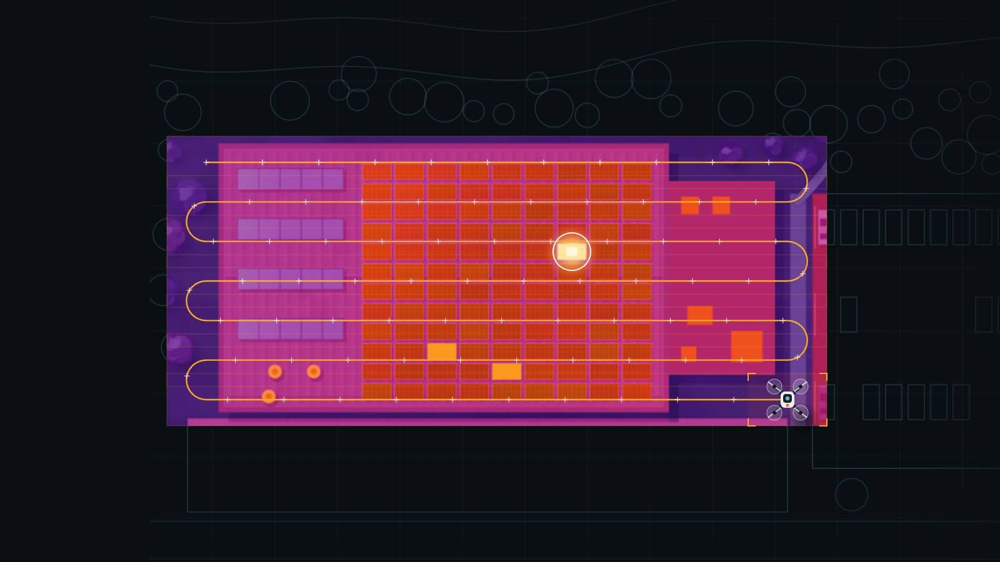

Drohnen-Dienstleister · Berlin und Brandenburg
Was von unten verborgen bleibt, zeigt der Flug.
Inspektion, Thermografie, Vermessung und Luftaufnahmen für Unternehmen, Hausverwaltungen und Betreiber von Photovoltaik-Anlagen.
Einsatz anfragen Scrollen Sie, die Drohne fliegt mit
Ansicht
01 / 03Planen
Vor dem Start steht die Bahn fest: Streifen mit Überlappung, damit aus vielen Einzelbildern ein Ganzes wird.
- 0von 7 Streifen
- 0Aufnahmen
Illustration, kein echtes Messergebnis
Die Szene zeigt von oben eine gezeichnete Gewerbeanlage mit Halle, Photovoltaik-Feld, Bürotrakt und Parkplatz. Eine Drohne fliegt in sieben Streifen darüber. Sie können zwischen Luftbild, Wärmebild und Vermessung wechseln. Im Wärmebild fällt ein Solarmodul auf, das heißer ist als seine Nachbarn. Es handelt sich um eine Illustration.
Leistungen
Vier Arten, von oben hinzusehen.
Jeder Einsatz endet mit einem Ergebnis, das Sie weitergeben können: an die Versicherung, den Planer, die Eigentümer.
-
01
Inspektion
Dächer, Fassaden, Schornsteine und Anlagen prüfen, ohne Gerüst und ohne Betreten. Befunde stehen mit Foto und Position im Bericht.
Preis nach Aufwand, vorab genannt
-
02
Thermografie
Photovoltaik und Dächer mit der Wärmebildkamera: Auffällige Module und Wärmebrücken werden sichtbar. Berichte zu PV-Anlagen orientieren sich an DIN IEC/TS 62446-3.
Preis nach Aufwand, vorab genannt
-
03
Vermessung
Orthofoto, 3D-Modell und digitales Dachaufmaß aus Photogrammetrie, auf Wunsch mit Höhenlinien und Flächenangaben.
Preis nach Aufwand, vorab genannt
-
04
Luftaufnahmen
Foto und Film für Website, Exposé, Baufortschritt und Pressematerial. Ruhige Fahrten, ausgearbeitet und geschnitten.
Preis nach Aufwand, vorab genannt
Was Sie bekommen
Kein Bildordner, sondern ein Ergebnis.
Wählen Sie eine Ausgabe. Alle Bilder hier sind gezeichnete Beispiele zur Anschauung.
PrüfberichtBeispiel, Illustration
- Objekt
- Gewerbehalle mit Photovoltaik-Anlage
- Verfahren
- Befliegung mit Wärmebild- und Fotokamera
- Datum
- Tag des Einsatzes laut Auftrag
| Nr. | Befund | Ort | Empfehlung |
|---|---|---|---|
| 1 | Modul deutlich wärmer als die Nachbarn | Feld 1, Reihe 5 | Vor Ort prüfen |
| 2 | Zwei Module leicht erwärmt | Feld 1, Reihe 10 und 11 | Beobachten |
| 3 | Ablagerung am Dachrand | Südseite | Reinigen |
Bildseiten mit Position und Foto zu jedem Befund folgen im vollständigen Bericht.
Orthofoto
Aus vielen überlappenden Einzelbildern entsteht ein entzerrtes Luftbild, in dem sich Flächen und Abstände messen lassen.
Gezeichnete Illustration.
Ablauf
Von der Anfrage bis zur Übergabe.
-
01
Anfrage
Sie schildern Objekt, Ort und Zweck. Wir melden uns mit Rückfragen.
-
02
Einsatzplanung
Wir prüfen Flugraum und Genehmigung, klären den Zugang und legen das Wetterfenster fest.
-
03
Flug
Der Flug folgt einer festgelegten Bahn. Wo es nötig ist, sprechen wir uns vor Ort mit Ihnen ab.
-
04
Auswertung
Aus den Bildern entstehen Orthofoto, Modell und Befunde, je nach Auftrag.
-
05
Übergabe
Sie erhalten Bericht und Daten und besprechen die Befunde mit uns.
Zulassungen und Sicherheit
Wer über Ihrem Gelände fliegt, sollte es belegen können.
Auf Wunsch senden wir Ihnen die Nachweise vorab. Was wir jedem Angebot beilegen, steht unter den vier Punkten.
-
Registrierung
Betreiberregistrierung
Als Betreiber von Drohnen sind wir bei der Luftfahrtbehörde registriert. Die Betreibernummer steht auf jedem Bericht.
Die Betreibernummer legen wir jedem Angebot bei.
-
Qualifikation
Kompetenznachweis und Zeugnis
Für die offene Kategorie gilt der EU-Kompetenznachweis, für die Unterkategorie A2 zusätzlich das Fernpiloten-Zeugnis. Der Nachweis ist laut Luftfahrt-Bundesamt fünf Jahre gültig.
Die Nachweise der eingesetzten Piloten legen wir mit Gültigkeit bei.
-
Genehmigung
Offene und spezielle Kategorie
Einfache Einsätze fliegen wir in der offenen Kategorie. Komplexere Einsätze brauchen eine Betriebsgenehmigung in der speziellen Kategorie. Welche gilt, klären wir in der Einsatzplanung.
Eine nötige Genehmigung legen wir Ihnen vor dem Einsatz vor.
-
Versicherung
Haftpflicht
Der Drohnenbetrieb ist haftpflichtversichert. Den Nachweis legen wir Ihnen auf Anfrage vor.
Versicherer und Deckungssumme nennen wir im Angebot.
Quelle zu Kategorien und Nachweisen: Luftfahrt-Bundesamt, Offene Kategorie
Einsatzbeispiel
Im Foto sieht alles gleich aus. Im Wärmebild nicht.
Photovoltaik auf einer Gewerbehalle. Ziehen Sie den Regler.
- Das FotoAlle Module sehen gleich aus. Von außen ist nichts zu erkennen.
- Das WärmebildEin Modul ist deutlich wärmer als seine Nachbarn. Eine Zellgruppe läuft heiß.
- Der BerichtDas Modul wird mit Position und Bild dokumentiert. Danach folgt die Prüfung vor Ort.
Preislogik
Der Preis folgt dem Aufwand.
Sie erhalten vor dem Flug ein schriftliches Angebot. Diese vier Dinge bestimmen es.
- ObjektGröße, Höhe und Art der Fläche.
- Zugang und FlugraumLage, Genehmigung, Auflagen vor Ort.
- ErgebnisFotos, Wärmebild, Modell oder voller Bericht.
- AuswertungWie tief wir in die Daten gehen.
Fragen
Was Kundinnen und Kunden zuerst wissen wollen.
Brauche ich eine Genehmigung für den Flug über meinem Grundstück?
Das klären wir vor dem Flug mit Ihnen: Wer darf zustimmen, welcher Luftraum gilt, braucht der Einsatz eine Genehmigung. Einfache Einsätze fliegen wir in der offenen Kategorie, komplexere in der speziellen Kategorie mit Betriebsgenehmigung.
Was zeigt eine Thermografie, und reicht sie für Versicherung oder Gewährleistung?
Sie zeigt Temperaturunterschiede, etwa ein Modul, das heißer läuft als seine Nachbarn. Ob ein Bericht für Versicherung oder Gewährleistung ausreicht, hängt vom Fall ab. Sprechen Sie das vorab an, wir stimmen Inhalt und Form des Berichts darauf ab.
Wie lange dauert der Einsatz, und wann habe ich den Bericht?
Das hängt von Objekt und Wetter ab. Nach Ihrer Anfrage nennen wir Ihnen Flugtermin und Berichtstermin schriftlich.
Was kostet es?
Der Preis richtet sich nach dem Aufwand, nicht nach einer Pauschale. Sie erhalten ihn schriftlich, bevor wir fliegen.
Ist der Pilot qualifiziert und versichert?
Ja. Die Nachweise stehen im Abschnitt Zulassungen und Sicherheit, auf Wunsch senden wir Ihnen Kopien vorab.
Einsatz anfragen
Nennen Sie uns Ort und Zweck.
Mehr brauchen wir für die erste Rückmeldung nicht.
- Standort
- Beispielweg 1 · Brandenburg an der Havel
- Einsatzgebiet
- Berlin und Brandenburg
- Erreichbar
- Hier stehen Ihre Kontaktdaten.
Danke.
Dies ist eine Beispielseite. Ihre Angaben werden nicht gesendet.